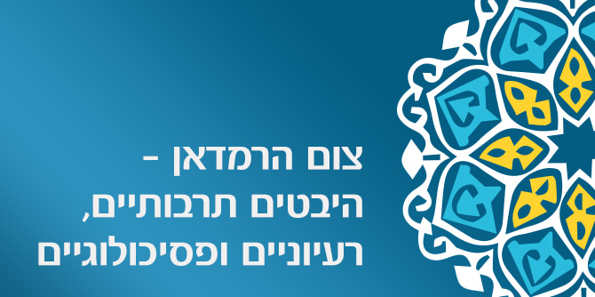

במפגש השתתפו ד"ר אימן אגבאריה, חבר סגל בית ספר מנדל למנהיגות חינוכית ומרצה בכיר בחוג למנהיגות ומדיניות בחינוך באוניברסיטת חיפה, הקאדי מוחמד רשיד זבדה, נשיא בית הדין השרעי בירושלים, וד"ר ערין סלאמה-קודסי מהחוג לשפה וספרות ערבית באוניברסיטת חיפה. המשתתפים דנו שאלות הקשורות ברמדאן: מדוע המוסלמים צמים? מדוע נמשך הצום חודש ימים? מהו העולם הרעיוני והערכי העומד מאחורי הצום? מהו המסר האוניברסלי של הרמדאן?
"הרמדאן הוא בושם – משהו שאתה מתבשם בו, והוא אמור להמשיך אתך – אנרגיה מתחדשת שאמורה להימשך כל השנה", פתח ד"ר אגבאריה, שגם הנחה והוביל את המפגש. "צום הוא טכנולוגיה עתיקה של האדם, שדרכה אתה מנסה להסדיר ולמשמע... תאוות, רצונות, מאוויים. אין ציוויליזציה בלי היסוד הזה של ההימנעות, של הנסיגה, של האיפוק".
הקאדי מוחמד רשיד זבדה הדגיש את תכלית הצום: יראת האל ורצונו של המאמין לזכות באהבת האל באמצעות הצום, שהוא אחד מחמשת עמודי האסלאם. "הצום הוא אמנם חובה דתית, אך מטרתו אינה להקשות אלא דווקא לעשות טוב לבני אדם בכלל – בחודש זה מרבים במעשים טובים ומביאים שמחה לאחרים. זה החודש שבו ירד הקוראן מהשמים אל הנביא מוחמד, ולכן זה זמן מיוחד. הצום אינו המטרה, אלא אמצעי לנקות את הנפש, להחיות את האנושיות שבתוכנו, הנשחקת במירוץ החיים, ולהרגיל אותנו לעשות טוב וחסד עם האחרים: עם בני משפחתנו, עם הסובבים אותנו ועם האנושות כולה", אמר.
ד"ר ערין סלאמה-קודסי התמקדה במושג חשבון הנפש בפסיכולוגיה של הזרם המיסטי באסלאם – הסופיות, זרם שהופיע באסלאם בסוף המאה השמינית בעירק ובפרס, ומייצג את הסגפנות. לדבריה, מוקד החוויה הסופית הוא השאיפה להתקרבות אל האל עד כדי אחדות טוטלית עמו. זוהי תכליתו העמוקה של הצום – שיאו של תהליך מתמיד של ריסון הנפש, מלחמה בלתי מתפשרת באגו וביצר, עד כדי הפיכתו ממכשול למימוש התכלית. "הצום הוא מצווה שבין אדם לאלוהיו, שכן אין למצווה ביטוי חיצוני נראה לעין. הצום הוא פרקטיקה חשובה שמקרבת את האדם לאלוהיו", אמרה.
צפו במצגת של ד"ר ערין סלאמה-קודסי >>
השאלות וההערות שעלו מקהל השומעים עסקו בין היתר בניסיון לעמוד על האטימולוגיה של המונח "נפש" באסלאם; במידת שבה הושפעה מגמת הפרישות והסגפנות הסופית מן הנזירות בנצרות; בשאלה באיזו מידה התקיימה גם בסופיות תפיסה אנטינומית; במתח שבין היסוד הקולקטיבי ברמדאן ("האפטאר" למשל) לבין הממד האינטימי של הצום (בין המאמין לאלוהיו), ובשאלה באיזו מידה זוכה צום הרמדאן לאחיזה בקרב הדור הצעיר.
ד"ר אגבאריה חתם את המפגש בהדגשה כי הקריאה והפרשנות, כפי שהוצגו במפגש, הם קריאה מודרניסטית שלנו, מתוך מציאות חיינו היום ומתוך רצון לטעון את המסורת באנרגיות חדשות ברוח הזמן הזה, זאת כדי לחזור ולהתחבר אליה מחדש ולתת לה טעם, משמעות ומקום מרכזי בחיינו.
{kind=link}